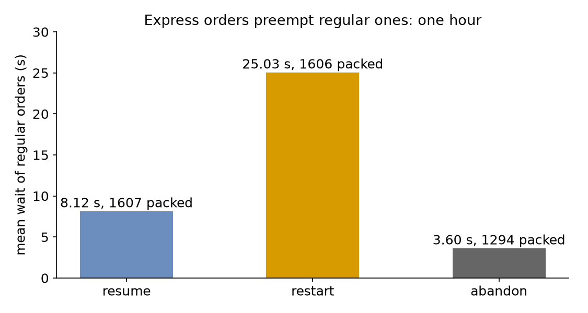

Interruptions
Level: Advanced
A quarter of the shop's orders are express, as in Priorities, but now an express order does not wait for the regular order being packed: it takes the packer at once. This page asks: what remains of a regular order's packing when an express order takes its packer, and which way of carrying on keeps regular orders waiting least? It compares three policies over an hour.
What You Add
A packer that can be preempted, an on_interrupt policy on regular orders: resume, restart or abandon, and a breakdown, which interrupts work in the same way. The shop is the one from Priorities: one packer, regular orders at 0.45 a second and express orders at 0.15, and 1.5 seconds of packing.
Preemption
Priority so far decided only who goes next. Preemption also stops the work in progress: SimPy's PreemptiveResource takes a unit from the user with the highest priority value when a request with a lower one finds every unit busy, and that user's process receives an Interrupt. In desflow it is preempt: true on a resource whose queue is priority:
Equal priorities do not preempt, so one express order does not take the packer from another; SimPy's one exception, a user whose request with preempt: false was made at the same moment, does not arise here.
Resume, Restart or Abandon
A preempted or interrupted task first gives back everything it holds and stops waiting for anything, as SimPy's with blocks do on the way out. Its on_interrupt then says what it does:
resume, the default: it queues again and, once it has the packer back, packs for the time it had left;restart: it queues again and packs for a new time, drawn from the same seeded stream, as if the work were spoiled;abandon: it ends, and its flow with it, unlesson_interrupt_nextnames a task to go to.
It publishes preempted (or interrupted) when it loses the packer, and resumed when it has it again:
pack_order:
service: packing
resource: packers
priority: 1
# What a regular order does when it loses the packer
on_interrupt: ${POLICY:-resume}
payload: {event_type: order_packed}
${POLICY:-resume} reads the environment variable POLICY, so POLICY=restart desflow run interruptions.yaml runs the second policy.
def pack(env, sampler, shop, arrival, key, task_id, policy):
"""Packs one order; when it loses the packer, it follows `policy`."""
task, priority = TASKS[arrival]
path_id = "Shop.service.packing"
def publish(value):
env.publish_event(key, value, task=task, instance=task_id)
publish({"path_id": path_id, "status": "queued"})
env.stats.task_queued(task, task_id)
shop["running"].setdefault(task, []).append(env.active_process)
remaining, started = None, False
while True:
request = shop["packers"].request(priority=priority)
since = None
try:
yield request
status = "resumed" if started else "started"
publish({"path_id": path_id, "status": status})
if started:
env.stats.task_resumed(task, task_id)
else:
env.stats.task_started(task, task_id)
started = True
if remaining is None:
remaining = sampler.sample(env.registry.get_config(path_id))
since = env.now
yield env.timeout(remaining)
publish({"event_type": "order_packed" if priority else "express_packed"})
env.stats.task_finished(task, task_id)
shop["packers"].release(request)
break
except simpy.Interrupt as interrupt:
request.cancel()
shop["packers"].release(request)
if since is not None:
# resume serves what is left; restart draws a new packing time
remaining = (
remaining - (env.now - since) if policy == "resume" else None
)
preempted = isinstance(interrupt.cause, Preempted)
if preempted:
value = {"status": "preempted", "resource": "packers"}
else:
value = {"status": "interrupted", "cause": interrupt.cause}
publish({"path_id": path_id, **value})
env.stats.task_interrupted(task, task_id, preempted=preempted)
if policy == "abandon":
env.stats.task_dropped(task, task_id)
shop["running"][task].remove(env.active_process)
return
shop["running"][task].remove(env.active_process)
env.stats.flow_finished(arrival)
The process catches simpy.Interrupt, whose cause is SimPy's Preempted for a preemption, gives back its request, and asks again. That loop is what on_interrupt writes for you.
The statistics count each preempted, interrupted and resumed; a resumed order's wait is the sum of its waits, and its packing time is the time it was packed:
Interrupt a Task
Preemption is one source of interrupts; a model can send others. An interrupt names a task, and every instance of it that is running, waiting or being served, receives an interrupt with the cause given, and follows its on_interrupt. A where condition, such as attr.order == 3, limits it to the instances it holds for. Here the packer is called away at 30 minutes:
scenario:
# The packer is called away at 30 minutes: every regular order in the shop,
# waiting or being packed, is interrupted
- {at: 30 min, interrupt: {task: pack_order, cause: called away}}
A task can carry the same interrupt, applied when it finishes.
def called_away(context: SimulationContext):
"""The packer is called away at 30 minutes: every regular order in the shop,
waiting or being packed, is interrupted."""
yield context.env.timeout(1800)
context.interrupt("pack_order", cause="called away")
app.add_process(called_away)
context.interrupt(task, where=None, cause=None) returns how many instances it reached; it never reaches the instance that calls it.
def called_away(env, shop):
"""The packer is called away at 30 minutes: every regular order in the shop,
waiting or being packed, is interrupted."""
yield env.timeout(1800)
for process in list(shop["running"].get("pack_order", [])):
process.interrupt("called away")
process.interrupt(cause) is SimPy's; the model keeps its own list of the processes it may interrupt.
A Breakdown
A machine that fails interrupts the work it was doing in the same way. A resource's breakdown makes it fail at random times and be repaired: here a packing station fails about once a minute and takes 5 to 15 seconds to repair:
resources:
station:
current_cap: 2
max_cap: 3
breakdown:
# Calendar time from a repair, or the start, to the next failure.
time_to_failure: {dist: exponential, rate: 0.0167}
repair: {dist: uniform, low: 5 s, high: 15 s}
# The orders being packed are interrupted, and follow their on_interrupt.
work: interrupt
.add_resource("station", current_cap=2, max_cap=3)
.add_breakdown(
"station",
# Calendar time from a repair, or the start, to the next failure
time_to_failure={"dist": "exponential", "rate": 0.0167},
repair={"dist": "uniform", "low": 5, "high": 15},
# The orders being packed are interrupted, and follow their on_interrupt
work="interrupt",
)
breakdowns={
"station": BreakdownConfig(
# Calendar time from a repair, or the start, to the next failure
time_to_failure=DistributionConfig(dist="exponential", rate=0.0167),
repair=DistributionConfig(dist="uniform", low=5, high=15),
# The orders being packed are interrupted
work="interrupt",
)
},
run_breakdowns(env, station, sampler) is the SimPy process that puts the station down and repairs it.
With work: interrupt, each order being packed when the station fails receives an interrupt whose cause is breakdown and follows its on_interrupt, as a preempted order does. During the repair the station's effective capacity is 0, so no order starts, while its current_cap keeps the planned value; a change to it during the repair sets the capacity the station returns to. With work: finish, the orders being packed finish, and only new work waits for the repair. Breakdowns checks the downtime of the example.
Result
What remains of a regular order's packing when an express order takes its packer? With resume, the time it had left: 344 preemptions cost regular orders a mean wait of 8.12 seconds. With restart, nothing: each preempted order packs again from the start, preemptions rise to 393, and the mean wait triples to 25.03 seconds. With abandon, the order is lost: 313 are, and the 1,294 packed orders wait only 3.60 seconds, because the queue loses everyone who was preempted:

The Builder and Low-level scripts print all three:
resume : 344 preempted, 1607 packed, mean wait 8.12 s, mean packing 1.50 s
restart: 393 preempted, 1606 packed, mean wait 25.03 s, mean packing 1.69 s
abandon: 313 preempted, 1294 packed, mean wait 3.60 s, mean packing 1.50 s
Why It Works
Under restart the packer spends part of its time on packing that is thrown away, so it does more work for the same orders: the mean time packed rises from 1.50 to 1.69 seconds, the load nears what one packer can do, and waits grow fast, as on Queues and Capacity. resume loses no work, so its waits are close to those of plain priority. abandon looks best only because the mean leaves out the orders it lost; count them beside it. Resources describes preemption, and Tasks and Processes the task's steps.
Full Files
Full files
# The Interruptions tutorial: express orders take the packer from regular ones.
# Run it with: desflow run interruptions.yaml
# With restart instead of resume: POLICY=restart desflow run interruptions.yaml
simulation:
sim_id: Shop
factor: 0
random_seed: 42
resources:
# An express order takes the packer from a regular one being packed
packers: {current_cap: 1, max_cap: 4, queue: priority, preempt: true}
services:
packing: {dist: constant, value: 1.5 s}
arrivals:
# 0.6 orders a second in all, one in four of them express
orders: {dist: exponential, rate: 0.45, spawn: pack_order}
express: {dist: exponential, rate: 0.15, spawn: pack_express}
tasks:
pack_order:
service: packing
resource: packers
priority: 1
# What a regular order does when it loses the packer
on_interrupt: ${POLICY:-resume}
payload: {event_type: order_packed}
pack_express:
service: packing
resource: packers
priority: 0
payload: {event_type: express_packed}
scenario:
# The packer is called away at 30 minutes: every regular order in the shop,
# waiting or being packed, is interrupted
- {at: 30 min, interrupt: {task: pack_order, cause: called away}}
# Counts of preemptions and resumptions, and the mean wait and service, at the end
stats: {level: typical, interval: 1 h}
egress:
- type: Console
run:
until: 1 h
"""The Interruptions tutorial: express orders take the packer from regular ones.
One packer, regular orders at 0.45 a second and express orders at 0.15, and 1.5
seconds of packing. Every record is printed to the terminal, and the script prints
what preemption did to regular orders under each policy at the end:
python interruptions.py 2>/dev/null shows only those lines.
"""
import logging
from desflow import ConsoleEgress, SimulationContext
logging.basicConfig(
level=logging.INFO, format="%(levelname)s [%(asctime)s] %(message)s"
)
def shop(policy: str = "resume") -> SimulationContext:
"""The shop, where a regular order follows `policy` when it loses the packer."""
app = (
SimulationContext(sim_id="Shop", factor=0, random_seed=42)
# An express order takes the packer from a regular one being packed
.add_resource(
"packers", current_cap=1, max_cap=4, queue="priority", preempt=True
)
.add_service("packing", dist="constant", value=1.5)
# 0.6 orders a second in all, one in four of them express
.add_arrival("orders", dist="exponential", rate=0.45)
.add_arrival("express", dist="exponential", rate=0.15)
# Counts of preemptions and resumptions, and the mean wait and service, at the end
.with_stats("typical", interval=3600)
.add_egress(ConsoleEgress())
)
@app.task(
service_id="packing",
resource_id="packers",
priority=1,
# What a regular order does when it loses the packer
on_interrupt=policy,
)
def pack_order(task_id: int):
return {"event_type": "order_packed"}
@app.task(service_id="packing", resource_id="packers", priority=0)
def pack_express(task_id: int):
return {"event_type": "express_packed"}
for arrival, task, name in (
("orders", pack_order, "pack_order"),
("express", pack_express, "pack_express"),
):
def loop(context: SimulationContext, arrival=arrival, task=task, name=name):
while True:
entity = yield context.wait_for_arrival(arrival)
context.spawn(task(context.next_instance(name), entity=entity))
app.arrival_loop(arrival)(loop)
def called_away(context: SimulationContext):
"""The packer is called away at 30 minutes: every regular order in the shop,
waiting or being packed, is interrupted."""
yield context.env.timeout(1800)
context.interrupt("pack_order", cause="called away")
app.add_process(called_away)
return app
def outcomes(policy: str) -> dict:
"""Runs one hour and returns what preemption did to regular orders."""
app = shop(policy)
app.run(until="1 h")
readings = app.env.stats.readings()
name = "Shop.stats.tasks.pack_order.{}".format
return {
"preempted": readings[name("preempted")],
"interrupted": readings.get(name("interrupted"), 0),
"finished": readings[name("finished")],
"wait_mean": readings[name("wait_mean")],
"service_mean": readings[name("service_mean")],
}
if __name__ == "__main__":
for policy in ("resume", "restart", "abandon"):
r = outcomes(policy)
print(
f"{policy:<7}: {r['preempted']} preempted, {r['finished']} packed, "
f"mean wait {r['wait_mean']:5.2f} s, mean packing {r['service_mean']:4.2f} s"
)
"""The Interruptions tutorial: express orders take the packer from regular ones.
One packer, regular orders at 0.45 a second and express orders at 0.15, and 1.5
seconds of packing. Every record is printed to the terminal, and the script prints
what preemption did to regular orders under each policy at the end:
python interruptions_low_level.py 2>/dev/null shows only those lines.
"""
import itertools
import logging
import simpy
from simpy.resources.resource import Preempted
from desflow import (
CapacityConfig,
ConsoleEgress,
DistributionConfig,
DynamicRealtimeEnvironment,
DynamicResource,
Sampler,
SimParameter,
)
logging.basicConfig(
level=logging.INFO, format="%(levelname)s [%(asctime)s] %(message)s"
)
PARAMS = SimParameter(
sim_id="Shop",
arrival={
# 0.6 orders a second in all, one in four of them express
"orders": DistributionConfig(dist="exponential", rate=0.45),
"express": DistributionConfig(dist="exponential", rate=0.15),
},
service={"packing": DistributionConfig(dist="constant", value=1.5)},
resources={"packers": CapacityConfig(current_cap=1, max_cap=4)},
)
TASKS = {"orders": ("pack_order", 1), "express": ("pack_express", 0)}
def pack(env, sampler, shop, arrival, key, task_id, policy):
"""Packs one order; when it loses the packer, it follows `policy`."""
task, priority = TASKS[arrival]
path_id = "Shop.service.packing"
def publish(value):
env.publish_event(key, value, task=task, instance=task_id)
publish({"path_id": path_id, "status": "queued"})
env.stats.task_queued(task, task_id)
shop["running"].setdefault(task, []).append(env.active_process)
remaining, started = None, False
while True:
request = shop["packers"].request(priority=priority)
since = None
try:
yield request
status = "resumed" if started else "started"
publish({"path_id": path_id, "status": status})
if started:
env.stats.task_resumed(task, task_id)
else:
env.stats.task_started(task, task_id)
started = True
if remaining is None:
remaining = sampler.sample(env.registry.get_config(path_id))
since = env.now
yield env.timeout(remaining)
publish({"event_type": "order_packed" if priority else "express_packed"})
env.stats.task_finished(task, task_id)
shop["packers"].release(request)
break
except simpy.Interrupt as interrupt:
request.cancel()
shop["packers"].release(request)
if since is not None:
# resume serves what is left; restart draws a new packing time
remaining = (
remaining - (env.now - since) if policy == "resume" else None
)
preempted = isinstance(interrupt.cause, Preempted)
if preempted:
value = {"status": "preempted", "resource": "packers"}
else:
value = {"status": "interrupted", "cause": interrupt.cause}
publish({"path_id": path_id, **value})
env.stats.task_interrupted(task, task_id, preempted=preempted)
if policy == "abandon":
env.stats.task_dropped(task, task_id)
shop["running"][task].remove(env.active_process)
return
shop["running"][task].remove(env.active_process)
env.stats.flow_finished(arrival)
def order_generator(env, sampler, shop, arrival, policy):
config = env.registry.get_config(f"Shop.arrival.{arrival}")
for task_id in itertools.count():
yield env.timeout(sampler.sample(config))
key = f"{arrival}-{task_id + 1}"
env.process(pack(env, sampler, shop, arrival, key, task_id, policy))
def called_away(env, shop):
"""The packer is called away at 30 minutes: every regular order in the shop,
waiting or being packed, is interrupted."""
yield env.timeout(1800)
for process in list(shop["running"].get("pack_order", [])):
process.interrupt("called away")
def run(policy="resume", until=3600, factor=0.0):
env = DynamicRealtimeEnvironment(factor=factor)
env.registry.register_sim_parameter(PARAMS)
env.setup_egress([ConsoleEgress()])
# Counts of preemptions and resumptions, and the mean wait and service, at the end
env.setup_stats("Shop", "typical", interval=3600)
shop = {
# An express order takes the packer from a regular one being packed
"packers": DynamicResource(
env, "Shop", "packers", queue="priority", preempt=True
),
"running": {},
}
sampler = Sampler(seed=42)
env.process(order_generator(env, sampler, shop, "orders", policy))
env.process(order_generator(env, sampler, shop, "express", policy))
env.process(called_away(env, shop))
try:
env.run(until=until)
finally:
env.teardown()
return env
def outcomes(policy: str) -> dict:
"""Runs one hour and returns what preemption did to regular orders."""
readings = run(policy).stats.readings()
name = "Shop.stats.tasks.pack_order.{}".format
return {
"preempted": readings[name("preempted")],
"interrupted": readings.get(name("interrupted"), 0),
"finished": readings[name("finished")],
"wait_mean": readings[name("wait_mean")],
"service_mean": readings[name("service_mean")],
}
if __name__ == "__main__":
for policy in ("resume", "restart", "abandon"):
r = outcomes(policy)
print(
f"{policy:<7}: {r['preempted']} preempted, {r['finished']} packed, "
f"mean wait {r['wait_mean']:5.2f} s, mean packing {r['service_mean']:4.2f} s"
)
Next, Competing Resources asks what happens while an order holds one resource and waits for another.